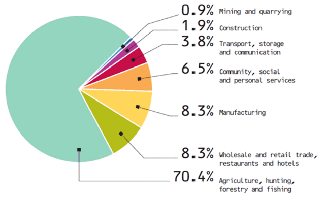

About the Issue
One such country, India, has the most number of unfair labor practices despite its growth over the past 70 years since independence
What is the issue about?
People who work should be respected to some extent regardless of what job they do. But this is not always the case, as we can see from the daily wage laborers and IT workers in India. Everything that employers do is to reduce and keep cutting costs until the point when the employer has no regard for the employee’s concerns. Faced with very low wages and highly overworked, many are leading miserable lives and with no solutions visible even in the distant future. Even more alarming is the child labor problem, which seems inevitable because of the labor issues that exist in India. Children typically go to work around 7 years old up until the rest of their lives, working under harsh and unsanitary conditions. Here, life risks do not seem significant when there is no money in your pocket. This can be traced back to the labor practices, which says it is okay to underpay workers and extract as much “juice” out of them
Who are the people affected?
The people affected by this issue are the daily wage laborers as well as IT workers who are overworked by their employers with no sufficient compensation. This mostly happens in India, therefore Indians are the most affected.
Where is this even happening?
This issue is taking place in developing countries like India, China, and other underdeveloped countries in Africa, but those countries have realized there is a problem while India doesn’t even know or care that the issue exists. This is why I plan to focus on India because the scale of this issue is global, which makes it enormous to be covered in one article and because it is better to focus on the most affected country. If this issue is fixed in India, then I think it would be fairly easy for the rest of the world to be corrected
Why is this even happening?
This is happening because most laws in India are mostly non-stringent, and even if they are stringent, it is relatively easy to “pay your way” out of the issue. The new laws enacted look like they are fixing the issue, but in reality they make no difference and the people affected by the issue remain affected and not compensated at all. Infact, adding salt to the already existing wounds is the Indian judicial and the police system, which is designed in such a way that it can “extract” the most from the people. Therefore, considering all the resulting problems, this issue needs to be brought to public attention and fixed as soon as possible
Causes
Division of child labor



UN Declaration of Human Rights